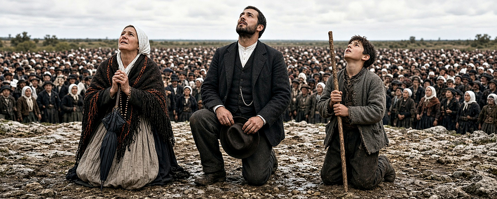
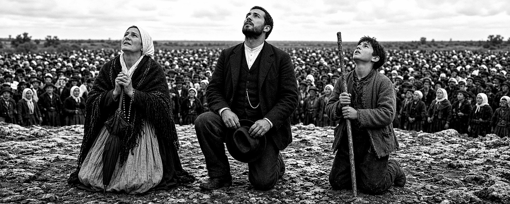
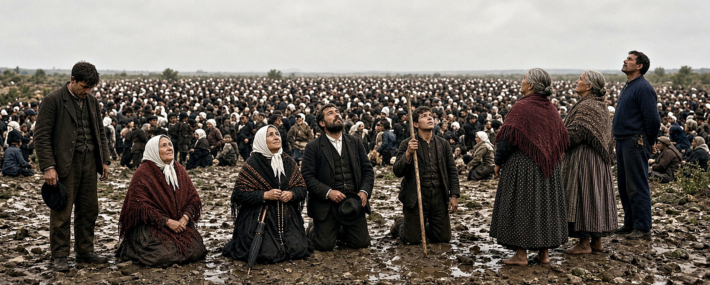
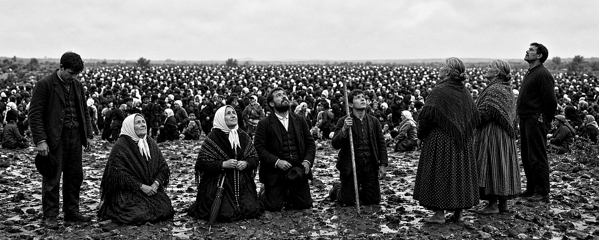

Cena 1 — O trio ajoelhado
ENTREGUEReferências 1 e 6 (foto P&B clássica): mulher de lenço com terço e guarda-chuva, homem de terno com chapéu na mão, rapaz com cajado.


Prompt (Grok Imagine · 5:2 · Qualidade 2.0)
Ultra-realistic documentary photograph, October 13, 1917, Cova da Iria, Fátima, Portugal, during the Miracle of the Sun. Panoramic wide cinematic frame. Three Portuguese peasants kneel on rocky limestone ground, all gazing up in awe at the same single point high in the sky: on the left, a middle-aged woman wearing a white cotton headscarf and a heavy dark fringed wool shawl with woven orange and red stripes over a long pale pleated skirt, hands clasped in prayer holding a wooden rosary and a closed black umbrella against her chest; in the center, a young man around 30 with short dark beard and mustache, wearing a dark wool three-piece suit with waistcoat, white collarless shirt and silver pocket-watch chain, holding his dark felt hat on his raised knee; on the right, a teenage boy in a worn grey wool jacket, kneeling, gripping a tall rustic wooden staff vertically with both hands, lips parted in wonder. Behind and beside them, a dense crowd of hundreds of rural villagers in dark 1910s clothing and white headscarves stretches across the entire wide frame to a horizon of low holm-oak shrubs, softly out of focus. Overcast silver daylight after rain, diffuse soft shadows, damp rocky soil with scattered stones, wet wool fiber texture, weathered sun-tanned skin with visible pores and fine lines, authentic period faces, natural muted earth-tone colors, HDR dynamic range, shot on a large-format press camera with 90mm lens at f/5.6, tack-sharp foreground subjects, gentle background falloff, very subtle photographic grain, museum-grade restored archival photograph quality, no modern objects, no text.


Cena 2 — O grupo amplo
ENTREGUEReferências 2 (colorizada) e 8 (original P&B): jovem cabisbaixo com boina à esquerda, senhora de xale vinho, trio central, mulheres descalças de xale e homem de suéter azul à direita.
⚠ Correção pendente (aguardando cota do Grok): todos devem olhar para o mesmo ponto no alto à esquerda — o grupo da direita ainda diverge. Prompt de edição pronto abaixo.
Prompt de correção (modo edição do Grok, sobre esta imagem)
Make every single person in the scene gaze upward at exactly the same single point high in the upper-left sky — the two standing elderly women on the right and the tall man in the dark blue sweater must turn their heads up toward that same upper-left point, matching the gaze direction of the kneeling group in the center. Keep the standing young man on the far left looking down at the ground. Do not change anything else: same people, same clothes, same positions, same lighting, same colors, same background crowd.


Prompt (Grok Imagine · 5:2 · Qualidade 2.0)
Ultra-realistic documentary photograph, October 13, 1917, Cova da Iria, Fátima, Portugal, Miracle of the Sun. Very wide panoramic frame of a group of Portuguese peasants on rocky muddy terrain, almost everyone gazing up at the same single point high in the sky. Far left: a young man standing in a dark wool suit, head bowed down looking at the ground, holding a dark beret in his hand. Left: an older woman kneeling, wrapped in a dark red fringed shawl, white headscarf, smiling faintly toward the sky. Center: a kneeling woman with white headscarf and dark fringed shawl with orange woven stripes clasping a rosary and a closed umbrella, a kneeling bearded man in dark three-piece wool suit holding his felt hat over his knee, and a kneeling teenage boy gripping a tall wooden staff, all looking up. Right: two barefoot standing women seen from behind at three-quarter angle, one in a burgundy fringed shawl and long polka-dot skirt, the other in a patterned shawl and striped apron, both looking up; beside them a tall man in a dark blue knit sweater gazes upward. Behind them all, an immense dense crowd of thousands of rural villagers in dark 1910s clothing with scattered white headscarves recedes to a hazy horizon of low shrubs under a vast pale overcast sky. Diffuse silver daylight after rain, muted earthy autochrome-like color palette, damp stones and mud, coarse wool and linen textures, weathered realistic skin with pores, authentic early-20th-century rural faces, HDR tonal depth, large-format press camera look, 65mm lens, deep focus, subtle fine film grain, museum-grade archival photograph restored to pristine quality, no modern objects, no text.
Cena 3 — Os dois homens (mão na testa)
AGUARDANDO COTA DO GROKReferência 3 (close): dois homens protegendo os olhos com a mão, olhando o sol; mulher sorrindo atrás. Prompt pronto — colar no Grok Imagine com proporção 5:2 e Qualidade 2.0.
Prompt pronto
Ultra-realistic documentary photograph, October 13, 1917, Cova da Iria, Fátima, Portugal, Miracle of the Sun. Wide panoramic close-up at eye level of two Portuguese peasant men in a dense crowd, both shielding their eyes with a raised flat hand against the forehead while staring straight up at a blinding point high in the sky, faces lit by a strange cold light. Left: a lean young man in his twenties, short dark hair, worn dark wool jacket over a collarless white shirt, squinting upward, mouth slightly open in astonishment. Right: an older rugged man with thick dark beard and mustache, deep weathered wrinkles, heavy dark overcoat with wide lapels, hand flat above his brow, expression of fearful awe. Between and behind them, partially visible villagers: a smiling young woman with a headscarf and other men in caps and hats also looking up, slightly out of focus. Dense crowd fading into pale overcast sky across the wide frame. Diffuse silver daylight, authentic early-20th-century rural Portuguese faces, weathered sun-tanned skin with visible pores, stubble, chapped lips, coarse wool fiber texture, HDR tonal depth, shot on large-format press camera, 150mm lens at f/4, shallow depth of field, tack-sharp on both faces, subtle fine photographic grain, muted natural color palette, museum-grade archival photograph restored to pristine quality, no modern objects, no text.
Cena 4 — A multidão (plano geral)
AGUARDANDO COTA DO GROKReferências 4 e 7: mar de milhares de peregrinos visto do alto, até a linha de árvores no horizonte.
Prompt pronto
Ultra-realistic documentary photograph, October 13, 1917, Cova da Iria, Fátima, Portugal, Miracle of the Sun. Very wide panoramic view from a slightly elevated position overlooking an immense sea of roughly seventy thousand pilgrims densely covering a barren rolling hillside, stretching from the immediate foreground to a distant horizon line of low holm-oak trees and shrubs. Nearly everyone wears dark heavy 1910s rural clothing — black capes, wool suits, flat caps and wide-brimmed hats — with scattered white headscarves of peasant women punctuating the dark mass like specks of light. In the near foreground, the backs and shoulders of men in hats and women in shawls, some tilting their heads up toward the sky, one man raising a hand to shield his eyes. The crowd dissolves into a granular texture of thousands of tiny heads toward the horizon. Vast pale overcast sky occupying the upper third, bright diffuse light breaking through thinning clouds. Damp autumn air, muted earthy tones, HDR tonal depth, large-format press camera on a tripod, 135mm lens at f/11, deep focus, subtle fine film grain, museum-grade archival photograph restored to pristine quality, no modern objects, no text.
Cena 5 — A fileira em pé (tom sépia)
AGUARDANDO COTA DO GROKReferência 5: grupo em pé — homem com bengala e mão na testa, três mulheres de xales pesados (uma sorrindo), homem de perfil olhando ao alto.
Prompt pronto
Ultra-realistic documentary photograph, October 13, 1917, Cova da Iria, Fátima, Portugal, Miracle of the Sun. Wide panoramic frame of a standing row of Portuguese peasants on trampled muddy ground, photographed at eye level, most gazing up at a single point high in the sky. Far left: a young man leaning on a tall walking stick, other hand raised flat above his brow shielding his eyes, dark worn suit and muddy leather boots. Center-left: an elderly woman engulfed in a heavy dark hooded wool cape looking upward. Center: two middle-aged women side by side in thick fringed shawls and white headscarves, one with hands joined, the other smiling gently with weathered kind eyes, a wicker basket and a small clay water jug on the ground at her feet. Right: a tall thin man in a dark suit standing in sharp profile, chin lifted high, gazing straight up. Behind them, a dense out-of-focus crowd of villagers in dark clothing stretches across the whole frame under a pale washed-out sky. Diffuse silver daylight, warm sepia-leaning muted color palette, coarse wool and linen textures, weathered realistic skin with pores and deep lines, authentic early-20th-century rural faces, HDR tonal depth, large-format press camera, 100mm lens at f/8, sharp across the row, subtle fine film grain, museum-grade archival photograph restored to pristine quality, no modern objects, no text.